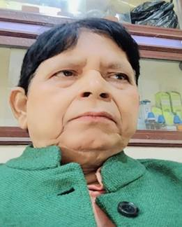

सम पर बजैत सुर
डा रमानन्द झा 'रमण'सं पहिल बेर कहिया परिचय भेल, से ठीक-ठीक मोन नहि अछि। प्रयासक बादो मोन नहि पड़ैए। ओना इहो मोनमे अबैए जे मोन किएक पड़य? कोनो व्यक्ति वा लेखकसं कहिया पहिल बेर भेट भेल, से मोन पाड़ब किएक जरूरी? जरूरी तं ई जे हुनका कोन तरहें जनैत छियनि, ओ अहांक लेल कतेक महत्वपूर्ण छथि, हुनका कोना बुझैत आबि रहल छियनि!
से रमण जीकें हम पहिल बेर सुनि क' चिन्हलियनि। ई सहजहिं होइत छैक जे कोनो नव लेखक अपन अग्रज पीढ़ीक लेखक मादे पहिने सुनैत अछि, तखन हुनका पढ़ैत अछि, गुनैत अछि आ हुनक प्रशंसक होइत अछि, आलोचको भ' जाइत अछि। मुदा, हम हुनक आलोचक नहि भेलहुं। कहियो ने। आलोचक होयबाक अवगति हमरा नहि अछि।
जखन पढ़ब आरम्भ कयलहुं, तं 'मिथिला मिहिर' हुनक लेखनसं परिचय कराब' लागल। मैथिलीमे हिनक लेखनक मूल विधा, माने आलोचना-समालोचना, विरल विधा अछि। विरल एहि दुआरें जे मैथिली साहित्यक हरेक कालखण्डमे एहि विधामे लिखनिहार बहुत थोड़ भेलाह अछि। एखनो थोड़ छथि। कारण एहि विधामे कलम भंजनिहार जोखिम उठबैत छथि। जहिया रमणजी एहि विधाकें उठौने होयताह, तहिया कने कमो रहल होनि, आजुक समयमे बेसी भ' गेल छैक। आब तं ई विधा अधिकांशक स्वभावमे आबि गेलैए, कंठमे आबि गेलैए, ठोर पर आबि गेलैए, कलममे भने नहि होइक। आ, से जोखिम आदरणीय भाइ रमानन्द झा 'रमण' एखनहुं उठा रहल छथि। शान्त भावसं उठा रहल छथि, बिनु कोनो हो-हल्लाकें उठा रहल छथि, बिनु आलोचकीय अदंक पसारने उठा रहल छथि।
राजनन्दन लाल कहने रहथि जे साहित्यक जे वस्तु कतहु नहि भेटय, से रमण जी लग भेटत। ओ संयोगी लोक छथि। संयोगि क' रखैत छथि सभ कथू। आ अंतमे कहलनि जे ओ स्वयंमे मैथिलीक 'डेटा सेन्टर' छथि, 'इनसाइक्लोपीडिया' छथि। एखनि-एखनि मोन पड़ैए जे जं एखनुक पीढ़ी उपरोक्त दुनू 'टर्म' हिनका लेल प्रयोग नहि करत। ओ कहतनि- मैथिलीक गूगल बाबा।
हम अपन लेखनक आरंभिक कालमे पटनाक यात्राक्रममे लेखक सभसं भेट करबाक बानि पोसने रही, से एखनो अछि। समानधर्मासं भेटक बाद हम उर्जस्वित होइत छी। ताहू समय एही भावें आ अग्रज लेखकक व्यक्तित्वकें बुझबाक आ हुनकासं सिखबाक बहन्ने लेखक-मिलन नीक लागय। एही क्रममे प्राय: दू-तीन बेर रमण जी सं हिनक कार्यक्षेत्र माने रिजर्व बैंक मे भेट भेल अछि, से ताहि दिनक बात भेल। नहूं-नहूं हिनक आर-आर लेखकीय स्वरूप सभसं परिचय होइत गेल।
अपन मूल विधाक अतिरिक्त मैथिलीक कतोक मोर्चाकें सम्हारने छथि। रमण जी नीक सम्पादक छथि, अनुवादक छथि आ गहनतम खोजी लेखक छथि। पहिने रेडियोक विविध भारतीसं (प्राय:) एकटा कार्यक्रम होइक- 'भूले-बिसरे गीत'। कार्यक्रमक उद्देश्य बुझबा लेल ई नामे काफी छैक जे एहिमे पुरान-पुरान गीत सुनाओल जाइत छल। रमण जी सेहो मैथिली साहित्यक एहने 'बिसरल' वस्तुक सभक प्रस्तोता छथि। मैथिलीक कतोक अमूल्य धरोहर ई प्रकाशमे अनलनि अछि, से एकर प्रमाण थिक। एहि काजमे एखनो ओहिना शान्त भावें तल्लीन रहैत छथि। ताकाहेरीक ई प्रकृति आ प्रवृति हिनका बेरा क' रखने छथि।
रमण जी पंजीकार छथि। मैथिली साहित्यकार लोकनिक जन्म तिथि आ पुण्य तिथिक डेटाक अद्भुत संग्रह अछि हिनका लग, जे 'घर-बाहर' आ आब फेसबुकमे 'जुग-जुग जीबथि' आ 'मोन पड़ैत छथि' स्तंभसं अबैत रहैछ। एखनि फेसबुकक फेसबुकक चलती छैक। एहि समयमे जन्मदिन, विवाहोत्सव सन-सन उत्सव मनयबाक चलनसारि सभ आयु-वर्गक लोक सभकें सकपंज कयने छैक। एहना स्थितिमे जिनक जन्मदिन रहैत छनि, तिनकहुं आ आनो लेखक-फेसबुकिया पाठक सभकें रमण जीक पोस्ट 'जुग-जुग जीबथि'क प्रतीक्षा रहैत छनि। मान्यता भेल जा रहल छैक जे रमण जी पोस्ट देताह, तखने अहां लेखक भेलहुं। कारण, हुनके पोस्ट पर फेसबुकक एतेक टा समाज अहांकें लेखकक रूपमे चिन्हैए। देखबा-पढ़बामे तं इहो आयल अछि जे रमण जी कें एहि लेल उलहन सेहो अयलनि। किछु लेखक सोझे आरोप लगबैत छथि जे रमण जी जानि-बूझि क' हुनक जन्मदिन पर पोस्ट नहि दैत छथि। एकर माने हुनका लेखक नहि बुझैत छथि। वा, कहियोक कोनो 'कानि' असुलि रहल छथि। जे, से...ऊपरमे हम जाहि जोखिमक गप कयल, ताहिसं हिनक भेट-घांट फेसबुको पर होइत रहैत छनि।
रमण जी पेशागत बैंकर रहलाह अछि। भारतीय रिजर्व बैंकक अधिकारी रहलाह अछि। एक टा बैंकरक लेल 'बुक कीपिंग' बड़ आवश्यक काज होइत छैक। ओ मैथिली साहित्यक 'बुक कीपिंग'मे लागल रहलाह अछि। तकर एक टा उदाहरण एहिठाम देब' चाहैत छी।
मैथिली कथा-लेखनक अविस्मरणीय आन्दोलन 'सगर राति दीप जरय'क हाल धरिक विभिन्न प्रकारक डेटा रमण जी परसैत रहलाह अछि। एकरा ओ कथा-लेखनक 'शांत क्रान्ति'क नाम देलनि अछि। एहि शान्त क्रान्तिमे दूगोला होम'सं पहिने धरिक सभ प्रकारक सांख्यिकी रमण जीक कम्प्यूटर मे छनि। ई हिनक बड़ी टा इतिहास-लेखन छनि। नव लोककें किनसाइत नहि बुझल होनि, तें कहैत छी जे प्रत्येक गोष्ठीमे पछिला गोष्ठी धरिक क्रिया-कलापक डेटाक 'बुकलेट' छापि क' बंटैत रहलाह। एक टा आर बात। कथा-गोष्ठीमे लेखक कथा पढ़बाक लोभें जाइत रहलाह अछि, जे स्वाभाविको छैक, तथापि कोनो एक लेखक सभ गोष्ठीमे उपस्थित नहि भ' सकलाह, जे संभवो नहि छल। मुदा, रमण जी एहि असंभवकें संभव बनौलनि। जहिया धरि गेलाह, कोनो गोष्ठी नहि छुटलनि, खाहे ओ गोष्ठी निछच्छ देहातमे होउक, शहरमे होउक वा महानगरमे होउक। से, ओहू समय जखन रिटायर नहि भेल रहथि। बैंकक चाकरी करैत साहित्य करब कतेक कठिनाह छैक, से हमहूं भोगल अछि, तें मैथिलीक प्रति रमण जीक अनुराग आ दायित्वकें रेखांकित करैत गौरव होइत अछि हमरा। सकल समाजकें होमक चाही।
एतेक डेटा आ फोटो कोना मेंटेन करैत छथि ओ? ई जिज्ञासा हमरा मोनमे छल। हम एकबेर पुछनहुं रहियनि जे एतेक डेटा आ फोटो कोना करैत छियै, तं अपन सहज मुस्कीक संग अति संक्षिप्त उतारा देलनि जे भ' जाइत छैक। हमर मोनमे उपजल जे कोना भ' जाइत छैक? तखने बैंकिंग मोन पड़ल। पहिने बैंक मे एक टा रजिस्टर तैयार होइ, जकरा 'डेली लिस्ट' कहल जाइक। प्रत्येक दिन अगिला बरखक ओही दिन कोन-कोन जरूरी काज होयतैक, तकर सूची लिख' पड़ैक। जेना- फिक्स्ड डिपोजिट पर सूदि देब, कोनो असूली आदि आदि...सम्बन्धित कर्मचारी/अधिकारीकें प्रत्येक दिन आफिसमे सभसं पहिने एहि रजिस्टरकें देखब जरूरी होइत छलैक, कारण ग्राहकक काज निर्वाध यथासमय होइत रहैक। ई काज बैंक मे आब कम्प्यूटर करैत छैक। हमरा भेल जे रमण जी सेहो साहित्यक 'डेली लिस्ट' रखैत होयताह, रखैत छथि। जं रखैत छथि, तं बड़ी टा बात छैक। ई साहित्यक प्रति दायित्व बोध देखबैत अछि। माने ई भोरे आंखि फोलतहिं साहित्यक काज देखैत छथि। हिनक ई समर्पण विरल अछि।
बैंक प्रबंधनकें जं कोनो लेखक वा भाषाविद् कर्मचारी/अधिकारी भेटि जाइत छैक तं किछु काज फाओमे सेहो भ' जाइत छैक। मुदा, एहि 'फाओ'क बदलामे बैंक अतिरिक्त मान-सम्मान दैत छैक। ई हमर व्यक्तिगत अनुभव अछि। रमण जी अपन नोकरीक कार्यकाल मे रिजर्व बैंक लेल बहुत रास अनुवादक काज सेहो कयलनि अछि। समय-समय पर अपन विभागीय अनुवादक बानगी सस्नेह हमरा भेंट करैत रहलाह अछि।
रमण जी अनुवादक छथि। ओ दुनू प्रकारक अनुवाद कयलनि अछि। साहित्यक आ प्रशासकीय, दुनू। माने साहित्यक आ तकनीकी अनुवाद। आ दुनूमे हिनक दक्षता छनि। से हिनका द्वारा अनूदित पोथी 'मौलियरक दू नाटक' आ फकीर मोहन सेनापतिक 'छओ बिगहा आठ कट्ठा' कें पढ़ने बूझल जा सकैछ। हम तकनीकी अनुवादकें अनुवादक विज्ञान मानैत छी आ साहित्यिक अनुवादकें अनुवादक कला। चूँकि हिनक दुनू प्रकारक अनुवाद हम देखने छी, तें विश्वस्त छी जे अनुवादक कला आ विज्ञान, दुनूमे हिनक मास्टरी छनि।
रमण जी भारत आ नेपाल, दुनू देशमे समादृत छथि। नेपालोक प्रमुख साहित्यिक आयोजनमे हिनक उपस्थिति अनिवार्य बनल रहैछ। हिनका प्रति ओहिठामक लेखके नहि, प्रबुद्ध श्रोतो सभक सम्मान हमर देखल अछि।
रमण जी सम्पादक छथि। समालोचनाक अतिरिक्त कतोक पोथीक सम्पादन कयलनि अछि आ एखनो क' रहल छथि। 'मैथिलीक विदुषी महिला', मैथिली कथाक धाप', लिली रेक कथा-उपन्यास सभक संकलन आ सम्पादन सन बहुत एहन काज अछि जे अविस्मरणीय अछि।
रमण जी भूमिका-लेखक सेहो छथि। अपनो आ आनो लेखक सभक पोथी सभक भूमिका लिखलनि अछि आ लिखियो रहल छथि। भूमिका-लेखन सेहो चुनौतीपूर्ण काज होइत छैक। अपन पोथीक भूमिका लिखबाकाल तटस्थताक चुनौती होइत छैक। कलम कनियो कोम्हरो बहकल, तं...? दोसराक पोथीक भूमिका लिखैत छी, तं कोनो तेहन बातक अपेक्षा लेखक नहि करताह जे उचित भले होउक, मुदा हुनक पोथी आ लेखनक विरुद्ध होउक। एहना स्थितिमे भूमिका-लेखकक इमानदारी पर प्रश्न ठाढ़ होइत छैक। किछु मामिलामे इहो देखल जाइछ जे भूमिका-लेखक भैयारी, गोतियारी आ दोस्तियारीक निर्वाह करबासं बाज नहि अबैत छथि।
रमण जी भूमिका आ सम्पादकीय, दुनू लिखलनि अछि, लिखैत छथि। दुनू लेखनमे मूलभूत अन्तर छैक। संक्षेपमे कही तं भूमिका-लेखनमे एहि बातक प्रमुखता होइत छैक (आ रहबाको चाही) जे प्रयोज्य पोथी वा संकलनकें कोन दृष्टिसं पढ़ल जाय। ई किएक आ कोना प्रकाशित भ' रहल अछि? एकर दृष्टिकोण परिचयात्मक आ व्याख्यात्मक होइत छैक।
जखनि कि सम्पादकीयमे प्रयोज्य पत्रिका/पत्रक/प्रकाशनक मुद्दा आ संवादक प्रमुखता होइत छैक। एकर दृष्टिकोण विचारपरक, विश्लेषणात्मक आ कखनो क' आलोचनात्मक सेहो होइत छैक। दुनूमे मूल अंतर यैह जे भूमिकाक केन्द्रमे विषय होइत छैक आ सम्पादकीयक केन्द्रमे विचार वा मुद्दा आ पाठकसं संवाद।
रमण जी अपन भूमिका आ सम्पादकीय लेखनमे सतर्क देखाइत छथि। कोनो लेखककें एहि दुनूक लेखनमे कतेक बेराएल होमक चाही, से रमण जी बेसी ठाम देखाइत छथि, सभ ठाम नहि। किछु ठाम एकभगाह भेलाह अछि। किछु-किछु सम्पादकीय मे सेहो अपेक्षित वैचारिक त्वराक खगता देखाइत अछि। ओना निकती पर नब्बे डिग्री पर ठाढ़ होयब ककरो लेल संभव नहि छैक। किछु ल'त-उनार भइए जाइत छैक। चेतना समितिक त्रैमासिक पत्रिका 'घर-बाहर'क कतोक बर्खसं सम्पादन क' रहल छथि। नियमित रखने छथि।
हिनक सम्पादन कौशल घर-बाहरमे ओहन नहि देखाइत अछि, जेहन विवेचनात्मक आ अनुसंधानात्मक पोथी सभमे परिलक्षित होइत अछि। तकर कारण भ' सकैत अछि आ होइतो अछि। दुनूक (पत्रिका आ पोथी) सम्पादनक आयाम फराक-फराक होइत छैक। पत्रिकाक सम्पादनमे लेखकपर निर्भरता बेसी रहैत छैक। पत्रिकाक लेल मनोनुकूल रचना उपलब्ध कराएब कोनो सम्पादकक लेल बड़ कठिनाह काज होइत छैक, ताहूमे मैथिली मे। चालनिमे पानि भर' सन। सम्पादक पाठकक रुचिक अनुसार पत्रिकाक अंक लेल विषय तय क' सकैत अछि, ओकर प्रस्तुति पर सोचि सकैत अछि, आ आर-आर बहुत बात छैक ताहि पर सोचि सकैत अछि। मुदा ई सभ तं तखन संभव, जखन पत्रिकाक लेल मूल वस्तु विषयानुकूल आ यथा समय भेटैक। पत्रिकाक प्रबंधक फराक टीम होइक। मुदा, मैथिली मे से सभ कहां?
चेतना समिति, पटनाक भारती मंडन पुस्तकालयमे रमण जी घर-बाहरक सांगह करैत भेटि सकैत छथि। सांगह माने पत्रिकाक वितरणक चिन्ता लेने मग्न देखि सकैत छियनि हिनका।
चेतना समिति, पटनाक साहित्यिक पक्षक खाम्ह छथि रमण जी। सभ प्रकारक साहित्यक काजक कार्यान्वयन हिनके पर रहैत छनि। समिति निर्णय लैत अछि। हिनक सलाह सेहो लैत अछि। से, बहुत पहिनेसं। से, कोनो समूहक कमिटी होअय, रमण जी ओहिठाम साहित्यिक काज हेतु अनिवार्य छथि। ओना इहो बात छैक जे अपन एहि सेवा लेल रमण जीक प्रशंसा होइत छनि, आलोचना होइत छनि आ खिधांस सेहो होइत छनि। आ, से एहन नहि छैक जे हिनका धरि नहि पहुंचै छनि। पहुंचै छनि। मुदा, एहि सभपर ओ कतेक गंभीरतापूर्वक विचार करैत छथि, से हिनका चेहराक भाव देखि बूझल नहि जा सकैछ। जं हिनका भीतर कोनो आक्रोशो होइत हेतनि, तं जेना कोशी नदीक जलक मादे कहल जाइत छैक जे ऊपर सं जलक सतह शांत रहैत छैक, तेहने शांत रमण जी सेहो देखाइ पड़ैत छथि।
जे काज कर' लोक होइए, जकर उद्देश्य भाषा-साहित्य आ साहित्यक सेवा होइत छैक, ओ अपन लक्ष्य दिस बढ़ैत रहैए। बाटक नीक-बेजाय ओकरा प्रभावित नहि करैत छैक। ओकरा अपन लक्ष्य आ दायित्व देखाइत रहैत छैक। हमरा रमण जीकें सेहो सैह देखाइत रहैत छनि।
नेना रही तं गाममे रसनचौकीक बजैत देखियै तं एक टा जिज्ञासा बरोबरि मोनमे होअय। रसनचौकीमे एक टा कलाकार एक्के सुरमे पिपही बजबैत रहैए। शेष गीतक अपन पिपहीमे गीतक विभिन्न भास बजबैए। एक्के सुरमे बजौनिहारक औचित्य हमरा नहि लागय। बादमे बुझना गेल जे शेष कलाकार सभक भास ओहि लगातार बजैत पिपहीक सुर, जकरा 'सम'पर बजाएब कहल जाइत छैक, केर संग मिलि क' सम्पूर्ण संगीत बनैत छैक, जे हमरा सभक कानक बाटें मस्तिष्क धरि अबैए। तें ओ कलाकार सम पर बजबैत रहैए।
डा रमानन्द झा 'रमण' मैथिली साहित्यमे 'सम' पर सुर बहार करैत कलाकार छथि। ओ दीर्घायु, स्वस्थ आ सक्रिय रहथि, से कामना।
अपन मंतव्य editorial.staff.videha@zohomail.in पर पठाउ।
विदेहमे सभठाम ताकू / Search all Videha
Static full-text search · Pagefindलेखक/शीर्षक/अंक/वर्ष — खोज-विधा; शेष बटन विदेह-खण्ड फिल्टर। Author/Title/Issue/Year are search modes; the remaining buttons filter indexed Videha sections. Static Pagefind index — no search server. रोमन/IAST खोजमे मूल Roman आ देवनागरी रूप दुनू एक संग सभ विदेह-सदेह corpus मे ताकल जाइत अछि। PDF-अभिलेख बटन archive.org/VidehaAndSadeha क जीवन्त सूची (सभ अंक + सदेह) मे ताकत — अंक-संख्या (जेना ४४५) लिखितहि सोझे PDF भेटत।